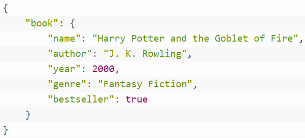
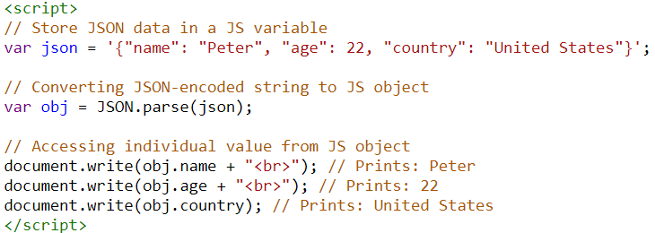

Structure of a Modern Web Application
The book we use proposes a 3-step process to understanding Web Application Security: Recon, Offense and Defense. In order to evaluate a web app for recon purposes, we need to understand how a modern web application works. In chapter 3, it covers some key components and technologies used in modern web applications.
Modern vs Legacy
| Legacy Web Application | Modern Web Application |
| Usually rely on server-side application to render and generate HTML/JS/CSS. No automatic update until the client sends another request. A page's content will usually only refresh when the user click on a button or manually "reload" the page. | The page is constantly updated via the AJAX technology (Asynchronous JavaScript and XML). The communication between the server and the client happens constantly whether the user send a request or not. An example is the Gmail interface. When a new email has arrived, you don't need to refresh the page but a new email will appear on the screen. |
| Single monolithic application | A combination of multiple applications communicating via a network protocol (i.e. the use of REST API) |
| Main technology/protocols used: HTML, CSS, JS |
Popular and key components/protocols used REST API JSON or XML JavaScript (JS) SPA (Single Page Application) frameworks (React, Vue, AngularJS..) Authentication /authorization system (e.g. SSO) One or modern web servers (usually hosted in the cloud) One or more web server packages (e.g. Apache, NginX, node.js) One or more databases (MySQL, MSSQL, MongoDB) Local data store on the client machine (usually in the browser cache via cookies, web storage, IndexDB) |
REST APIs
API stands for Application Programming Interfaces, and REST APIs stands for Representational State Transfer APIs. What it essentially does is provide a way for developers to interact with an application without having direct access to the application source code. Imagine you are trying to read a piece of data on a Google Doc. You can choose to use the browser to view it for sure, but if you are trying to write an application that reads data from hundreds of Google Doc, you will probably try to find a programmatically way to do it. Instead of accessing the database on Google or modify the code of Google Doc (I don't think Google will let you do it). Programmers can utilize the APIs provided by the service provide (i.e. Google, Facebook, Microsoft...) to access the services. In the Google Doc example, Google provides a Google Doc API for developers to access the Google Doc services (https://developers.google.com/docs/api)Compare with other APIs, REST APIs has the following characteristics/requirements (see https://blog.postman.com/rest-api-examples/ for details and examples)- Uniform Interface
- Stateless
- Cacheable
- Client-Server based
- Layered System
- Code on Demand (optional)

You can access some public REST API available on Postman.com via this link
https://www.postman.com/cs-demo/workspace/public-rest-apis/overview
JSON
REST APIs focuses on the communication between the client and the server (and server mapping for different services). The data exchange between the client and the server usually use JSON format.|
 Sample JSON |
 Parsing the JSON data to a JavaScript Object in the browser using JS. |
JavaScript
JavaScript is the programming language usually supported natively by modern browsers. The book provides a very quick overview of the syntax in JavaScript. You can run most of the code in the browser.
A key feature of JavaScript is its ability to create and modify Document Object Model (DOM), which is the model used by browsers to represent HTML, the webpages we see in the browser.
If you want to learn more about JavaScript, I highly recommend the JavaScript tutorial on w3schools.com
Apart from the common topics in most computer languages (e.g. Variable scopes, Functions), there are five things which are particularly critical for JavaScript.
Scope, context, prototypal inheritance, asynchrony and browser DOM
Scope and context
Asynchrony or Asynchronism
Asynchrony basically refers to how things are requested, processed and responded NOT in a FIFO (First In First Out), order due to the nature of Web Technology.
Imagine a client (browser) that makes requests to the remote server, due to network conditions, the requests and responses may happen in an out-of-order fashion.
Browser DOM
DOM refers to Document Object Model which is the hierarchical representation of data (usually rendered in the form of a web page) in a modern web browser. Simply visit any website and "view source", you will see how a typical website comes with at least the following three component <html>, <head> and <body>
SPA Framework
SPA stands for Single Page Application. In most legacy web applications and websites, the combination of HTML/CSS/JS and AJAX requests through REST APIs can provide a lot of many powerful functionality. However without a standard way of combining these technologies, the resulting code base can be messy and difficult to understand.
SPA Frameworks aims at providing a structure for creating desktop-application functionality in a Web application. It allows web application to easily create internal-state with reusable UI components, and has defined ways of lifecycle management and rendering logic.
VUE, React.js and Angular.js are probably the three most popular SPA frameworks for Web App development.
Extended reading: Comparison between VUE, React and Angular
Authentication and Authorization Systems
First off, what are the differences between authentication and authorization? In a nutshell...
Authentication: Identifying WHO the user is;
Authorization: Identifying WHAT the user has access to.
Instead of simple username/password authentication method and is easily compromised through different attacks. Later on encryption of these data and other techniques such as hashing help improving the security. Authentication architectures were also developed to provide functionalities such as Single Sign-On (SSO). An example is the varies options you can use to login to different website through the same credential (e.g. sign-in with Google/Apple/Microsoft/etc).
After knowing WHO the user is, it is important to have a system that manage WHAT the user has access to. For instance, with the WebAPI, what kind of data can a user access and how frequently can they make requests to the system? These are all related to the authentication system.
Authentication and authorization are related to OWASP Top 10 2021- A01 and A07
Web Servers
Last week we spent some time setting up a web development environment. A key component is the web server package and stack. The Apache Web Server Package is a common component used by many servers for providing web services. Other popular web server packages include Nginx, Node.js, Microsoft IIs. Usually addon/extensions are created to add additional supports on these web server packages.
Server-Side and Client-Side Databases
When setting up the environment in the virtual machine, apart from Apache/Node.js, we also setup a Database (MySQL/MariaDB). This databases are installed on server side to keep data persistent.
While keeping data on the server has the benefit of protecting the integrity of the data. It may not be the most efficient way as the data transfer requires a lot of data transmission. Some of the data from the website can be cached in the browser using local storage. It may contain varies form of information. Session storage is part of the local storage but is removed once the window/tab is closed.
Apart from local storage, IndexDB serves as a local database which is queryable, similar to what SQL databases can do on the server side. To check if your browser supports this feature, you can type if (window.indexedDB) { console.log('true'); } in the browser developer tab.
Modern web applications are expected to be dynamic and interactive, providing users with a seamless and responsive experience. Storing data in the browser is a fundamental aspect of building such applications.
With the advent of modern web technologies, web developers now have access to various ways of storing data in the browser.
Each storage option has its advantages and disadvantages, and choosing the right one can make a significant difference in the performance and user experience of the web application. *
Summary
In this chapter we had a quick overview of some major components and technologies used by Web Developers for developing web applications. Every single part of this technology stack may contain some security issues, and they can be exploited by attackers. Instead of being an expert in all these technologies, knowing how they work together can help identifying the issue and hopefully, preventing potential attack and mitigate the damage when such attack happens.
Useful Resources
https://theappsolutions.com/blog/development/vue-angular-react-comparison/
https://www.redhat.com/en/topics/api/what-is-a-rest-api
* https://blog.bitsrc.io/different-ways-to-store-data-in-browser-706a2afb4e58